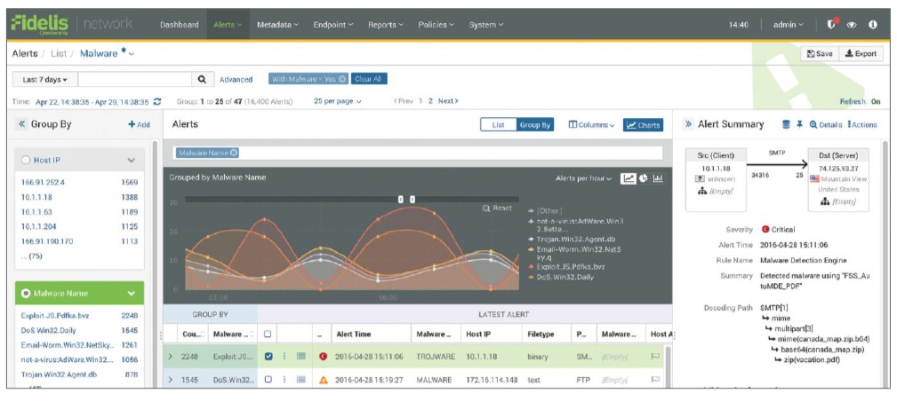
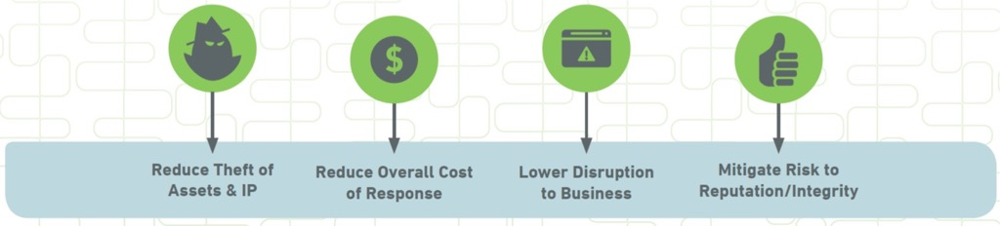

Fidelis Network————在攻击周期的每一阶段发现，调查，阻止高级攻击者
不错过任何一次关键攻击
企业或组织为了高效敏锐地将攻击者隔离在公司之外会花费数百万来构建安全网络。尽管他们这样的投入，但有决心的攻击者仍让会打破看似安全的组织并且窃取他们的知识产权，私有数据以及财务信息。SOCs的分析师和安全团队被警告压垮了。结果他们还是错过绝大部分的关键攻击或者重要的数据被偷走之后很久才发现。

只要像隐藏的攻击者一样深入的分析通信流量。识别他们的攻击，战术和行为你就可以快速的调查并防止数据被窃取。
产品概览
Fidelis 网络使具有安全意识的组织自信地在攻击周期内的每一个阶段发现，调查并阻止高级攻击者。它以数千兆的速度分析所有那些常规的网络安全系统错过的组织中的网络通信流量，并发现高级攻击者的工具和手段。通过Fidelis你可以获取到辨别w威胁的可视化，上下文环境以及速度，并确信数据没有被偷取。
发现其他方案遗漏的攻击：对于高级的恶意软件，利用和命令以及控制活动。Fidelis辨别攻击者的行为包括侧面的动机和数据泄漏的每一个阶段。
在开始的时候识别并组织有针对性性的攻击：快速的识别恶意的行为——包括网络元数据，命令控制活动以及侧面的动机并在开始的时候组织数据偷窃活动。
关联看似无关的网络活动和行为：通过在每一次的网络会话内自动获取和对之前收集的元数据进行安全分析，从而将看似无关的网络行为关联并验证警报。
减少监测和解决事件的时间：应用网络数据的威胁情报来快速的接收有关联的信息。启用安全性分析机制，在短时间内从警报中使用单一的接口调查事件。
能力
加快调查周期：简化大部分的调查任务的消费时间——收集数据——并使获取正在发生事件的尾端更加容易，所以你的专家可以集中关注什么才是重要的。
在攻击周期的每一个阶段发现威胁：在攻击周期的每一个阶段发现攻击者包括横向移动，命令的建立和控制的立足点以及窃取数据的准备阶段。
端口和协议的可见性：深入所以端口和协议的网络通信流量，包括误用非标准端口的协议和服务。此外，通过保存所有Fidelis检查的会话网络元数据，你可以及时的返回并重构攻击者的立足点。

深入探测回话：实时编码和分析内容，无论它嵌入的多深。深入探测会话引擎可看到每一个独立的网络包，在内存中将包重组成会话缓存，并实时递归编码分析会话缓存的协议，应用和内容对象——当会话发生的时候。这就使Fidelis对应用“看的更深“，尤其是网络流数据的内容。
发现和调查的回顾性分析：调查过去攻击者都做了什么。通过收集并保存网络和终端中丰富的内容级元数据，Fidelis提供了一个轻量级的，高速的，廉价的方式来分析历史数据。
在网络中阻止攻击者：识别活跃在你的网络的攻击者或者威胁内幕，单方面实时地阻止所以端口和协议的未经授权的信息传输而不是依靠第三方代理。
持续监控基于邮件的威胁：Fidelis 邮件传感器跟踪所有邮件的url和预置的或在云上对后续的相关会话活动进行额外的审查。
优点

Fidelis持续关注基于网络的数据丢失预防，结合它的ATD能力是一个有吸引力的观点也是与竞争对手STAP解决方案的一个清晰的区别。